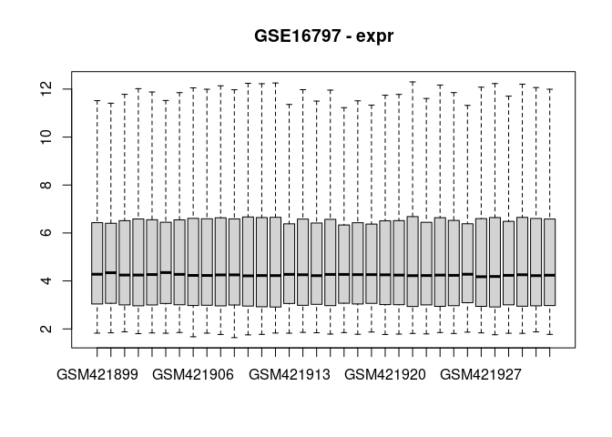
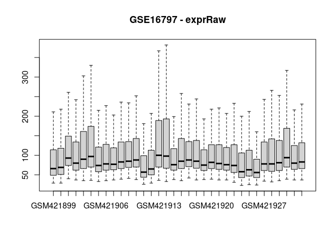
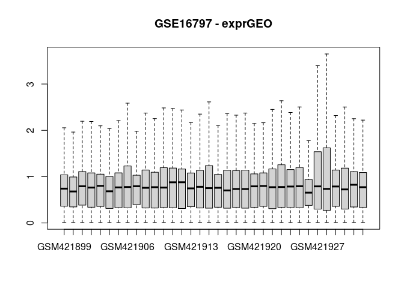
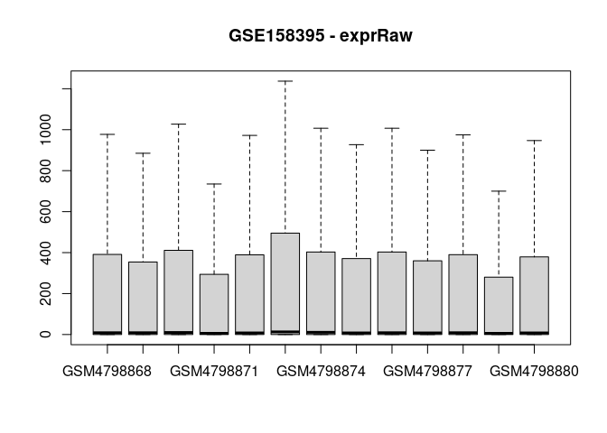
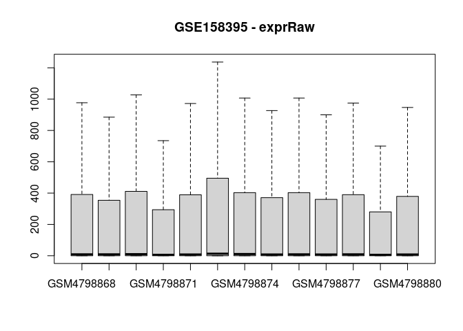

The goal of simpleExpressionProcessing is to provide simple tools for downloading and normalizing raw RNA expression data from GEO, including microarray and bulk RNA sequencing experiments, within the GEOquery class format.
IMPORTANT NOTE
- This is meant to be used for single-dataset
MetaIntegratorobjects - To fit into a
MetaIntegratorworkflow, datasets should be processed individually, then combined into a multi-dataset object prior toMetaIntegratoranalysis
Installation
You can install the development version of simpleExpressionProcessing from GitHub with:
devtools::install_github("BenSolomon/simpleExpressionProcessing")Example usage
Stepwise approach
This workflow involves the following steps:
- GEO data is downloaded with
MetaIntegrator. This includes anexprslot which contains the expression data, as normalized by the data authors - Supplemental data files are downloaded with
GEOquery, such as raw.CELfiles from the Affymetrix microarray platform - The raw expression files are normalized
- The GEO data object is modified in the following ways:
- The original
exprslot is reassigned to theexprGEOslot, to indicate it represents the authors’ normalized data - The raw, non-normalized data from the supplemental files are assigned to the
exprRAWslot - The user normalized data is added to the
exprslot, which is the slot used by downstream applications using MetaIntegrator GEO objects
- The original
- All expression slots (i.e.
expr,exprRAW, andexprGEO) are visualized with boxplots to evaluate the normalization process
Microarray workflow
devtools::load_all() # Only needed in package development environment
#> ℹ Loading simpleExpressionProcessing
#> Warning: replacing previous import 'S4Arrays::makeNindexFromArrayViewport' by
#> 'DelayedArray::makeNindexFromArrayViewport' when loading 'SummarizedExperiment'
#> Setting options('download.file.method.GEOquery'='auto')
#> Setting options('GEOquery.inmemory.gpl'=FALSE)
accession <- "GSE16797"
# Get GEO data
gse <- MetaIntegrator::getGEOData(accession)
#> Found 1 file(s)
#> GSE16797_series_matrix.txt.gz
#> Length Class Mode
#> GSE16797 1 -none- list
#> [1] "GSE16797_series_matrix.txt.gz"
# Get GEO supplemental data, including raw data, and process
## withr used to create a tempdir for supplemental files for purpose of demo
withr::with_tempdir({
getSuppFiles(accession)
reprocess_output <- processAffy(sprintf("./%s", accession))
# # Alternatively, can use `processAgilent` for Agilent platform
# reprocess_output <- processAgilent(sprintf("./%s", accession))
})
#> Warning: replacing previous import 'AnnotationDbi::tail' by 'utils::tail' when
#> loading 'hgu133plus2cdf'
#> Warning: replacing previous import 'AnnotationDbi::head' by 'utils::head' when
#> loading 'hgu133plus2cdf'
#>
#> Background correcting
#> Normalizing
#> Calculating Expression
# Add raw and reprocessed expression matrices to original MetaIntegrator
# GEO object
gse <- addRawExprMatrix(gse, reprocess_output$raw_expression)
gse <- addReprocessedExprMatrix(gse, reprocess_output$normalized_expression)
# Visualize effect of processing
geoAllBoxplots(gse)
RNAseq workflow
devtools::load_all() # Only needed in package development environment
#> ℹ Loading simpleExpressionProcessing
accession <- "GSE158395"
# Get GEO data
gse <- MetaIntegrator::getGEOData(accession)
#> Found 1 file(s)
#> GSE158395_series_matrix.txt.gz
#> Length Class Mode
#> GSE158395 1 -none- list
#> [1] "GSE158395_series_matrix.txt.gz"
# Need to fix some attributes of MetaIntegrator object for RNAseq compatibility
gse <- fixMetaIntegratorForRNAseq(gse)
# Get GEO supplemental data, including raw data, and process
## withr used to create a tempdir for supplemental files for purpose of demo
withr::with_tempdir({
getRNAcountMatrixNCBI(accession)
reprocess_output <- processRNA(sprintf("./%s", accession))
})
# Add raw and reprocessed expression matrices to original MetaIntegrator
# GEO object
gse <- addRawExprMatrix(gse, reprocess_output$raw_expression, mode = "rnaseq")
gse <- addReprocessedExprMatrix(gse, reprocess_output$normalized_expression, mode = "rnaseq")
# Visualize effect of processing
geoAllBoxplots(gse) 
